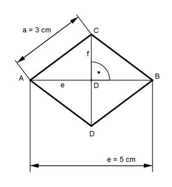

Pythagoras Aufgabe 46 Berechnen Sie die Fläche A einer Raute in cm2, wenn a = 3 cm und e = 5 cm.

Bei einer Raute stehen die beiden Diagonalen senkrecht aufeinander und halbieren sich. Satz von Pythagoras im Dreieck DBC: e f e a2 = (---)2 + (---)2 | -(---)2 2 2 2 f e (---)2 = a2 - (---)2 2 2 f (---)2 = 32 cm2 - 2,52 cm2 = 2,75 cm2 2 f2 ---- = 2,75 |*4 4 f2 = 10 cm2 |√ f = 3,3 cm f e --- * --- 2 2 f * e f * e A = 4 * ---------- = 2 * ------- = ------- = 2 4 2 3,3 cm * 5 cm = --------------- = 8,3 cm2 2